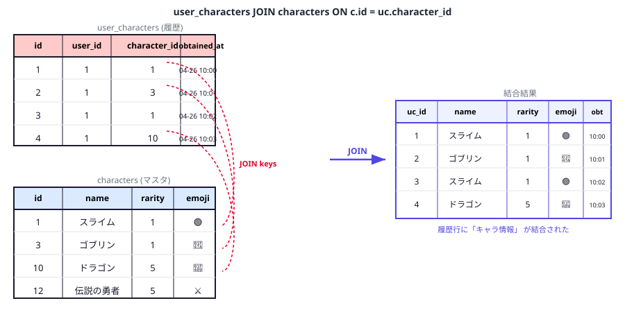
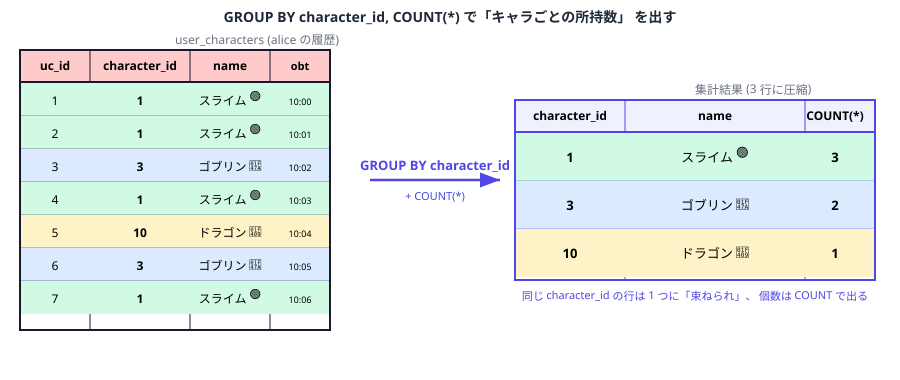

第 6 章 — Box と JOIN・集計
Ch.5 でガチャを引けるようになりました。 引いた履歴は user_characters テーブルに溜まっていきますが、
フロントの「Box」 画面はまだハードコード (毎回ドラゴン 1 体) のまま。 この章で履歴から「所持品一覧 + 個数」 を集計
して返す本実装をやります。
3 ステップで:
- JOIN で履歴とキャラマスタを 1 枚に
- GROUP BY + COUNT で同じキャラを 1 行に圧縮
/api/boxハンドラを書いて、 通算引いた回数 (total_pulls) も返す
6.1 JOIN: 履歴とマスタを 1 枚に
user_characters テーブルには character_id しか入っていません。
これだけでは「何のキャラを持っているか」 が分からないので、 characters マスタと結合して
キャラ名 / レア度 / 絵文字をくっつけます。

character_id をキーに、 マスタ側の行と結びつけて 1 枚のリレーションに展開する📚 コラム: JOIN と「結合キー」
JOIN = 2 つのテーブルを同じ値の列で繋いで横に並べる操作。 繋ぐ基準になる列を「結合キー」 と呼びます。
主に 4 種類:
- INNER JOIN (
JOINのみ): 両方のテーブルにマッチした行だけ残す。 一番よく使う - LEFT JOIN: 左のテーブルは全行残す、 右にマッチがなければ NULL。 「未所持を含む全キャラ一覧」 を出す等に
- RIGHT JOIN: LEFT の逆。 実務では LEFT を反転して書く方が多いので使われない
- FULL OUTER JOIN: 両方の全行を残す。 これも実務では稀
本教材では INNER JOIN と LEFT JOIN だけ知っておけば十分。
動作確認: SQL で先に試す
%%sql
-- guest (id=1) の履歴 + キャラ情報
SELECT uc.id AS uc_id, c.name, c.rarity, c.emoji, uc.obtained_at
FROM user_characters uc
JOIN characters c ON c.id = uc.character_id
WHERE uc.user_id = 1
ORDER BY uc.id;Ch.5 でガチャを引いていれば、 引いた回数ぶんの行が出ます。 同じキャラを 2 回引いていれば 2 行 出る (= 履歴なので重複を許す)。 これを 1 行にまとめるのが次のステップ。
6.2 GROUP BY + COUNT で「個数別」 にまとめる

character_id ごとに行を集約し、 COUNT(*) で「束ねた行の数」 を出す📚 コラム: 集計関数と GROUP BY
集計関数 = 複数行を 1 つの値にまとめる関数:
COUNT(*)— 行数。COUNT(列)ならNULL を除いた非NULL値の数SUM(列)— 合計AVG(列)— 平均MIN(列),MAX(列)— 最小・最大
単独で使うとテーブル全体に対する 1 つの値が出る。 GROUP BY 列 を付けるとその列ごとにグループ分けして、
各グループに対して 1 行ずつ集計値が出る。
例: SELECT character_id, COUNT(*) FROM user_characters GROUP BY character_id; →
各キャラに対してそのキャラを引いた回数が出る。
%%sql
SELECT c.id, c.name, c.rarity, c.emoji,
COUNT(*) AS count,
MIN(uc.obtained_at) AS first_obtained_at,
MAX(uc.obtained_at) AS last_obtained_at
FROM user_characters uc
JOIN characters c ON c.id = uc.character_id
WHERE uc.user_id = 1
GROUP BY c.id
ORDER BY c.rarity DESC, c.id;
MIN / MAX も同じ GROUP BY で取っているので、
「初めて獲得した日時」 「最後に獲得した日時」 も 1 つのクエリで出せます。
6.3 /api/box ハンドラを書く
フロントが期待する shape:
{
"user": { "id": 1, "name": "guest", "display_name": "ゲスト", "coins": 700 },
"total_pulls": 3,
"items": [
{ "id": 10, "name": "ドラゴン", "rarity": 5, "emoji": "🐉", "count": 1, ... },
...
]
}集計クエリ + 通算引いた回数 (total_pulls) + ユーザー情報 を 1 ハンドラで束ねます。
@route("GET", "/api/box")
def box(h):
user_id = 1 # まだ認証無し。 全員 guest として扱う
with get_conn() as conn:
# 1) 集計済みの所持キャラ一覧
rows = conn.execute(
"""
SELECT c.id, c.name, c.rarity, c.emoji,
COUNT(*) AS count,
MIN(uc.obtained_at) AS first_obtained_at,
MAX(uc.obtained_at) AS last_obtained_at
FROM user_characters uc
JOIN characters c ON c.id = uc.character_id
WHERE uc.user_id = ?
GROUP BY c.id
ORDER BY c.rarity DESC, c.id
""",
(user_id,),
).fetchall()
# 2) 通算 pull 回数 (= 履歴の総数)
total_pulls = conn.execute(
"SELECT COUNT(*) AS n FROM user_characters WHERE user_id = ?",
(user_id,),
).fetchone()["n"]
# 3) 最新の coins / ユーザー情報
u = dict(conn.execute(
"SELECT id, name, display_name, coins FROM users WHERE id = ?",
(user_id,),
).fetchone())
h._json(200, {
"user": u,
"total_pulls": total_pulls,
"items": [dict(r) for r in rows],
})
print("✅ /api/box が実 DB の集計を返すように")🧪 動作確認
- フロント (ガチャ画面) で「最新化」 ボタン (Box の右上)
- Ch.5 で引いた分のキャラが Box に並ぶ
- レア度の高い順に並ぶ (=
ORDER BY c.rarity DESCが効いている) - 同じキャラを 2 回引くと、 右上に
×2バッジが表示される - 下部のサマリ: 「N 回引いた / M 種類」 が表示される
コインも Ch.5 の pull で更新された値が見える。 ガチャ → DB → Box の流れがぜんぶ繋がっています。
6.4 ここまでで気づくこと — 次章への動機
ここまでで「ガチャを引く」 「Box に蓄積される」 が動いています。 でも仕組みをよく見ると気になる点があります。
- 誰がアクセスしても、 全員が「guest」 として同じ Box を覗く状態
- 友達と一緒に遊ぶ場合、 自分が引いたキャラを友達が見られるし、 友達のコインを自分が使えてしまう
- そもそもログイン画面が機能してない (Ch.4 末で /api/me が常に guest を返す)
これだと「俺のドラゴン」 「私のスライム」 が成立しない。 せっかく集めたのに自分のものにならない。
ここまで「ガチャを引いて Box に集める」 という遊びの部分は出来た。 でもこれを本当の意味で「自分の」 ものにするには、 個別ユーザーの概念が必要です。 そのために次章ではユーザー登録 / ログイン / セッション管理を導入します。
📝 自分でちょっと試す (発展)
- 「未所持の SSR (rarity=5) のみ」 を返す API
/api/box/missingを追加してみよう — ヒント:LEFT JOIN ... WHERE uc.id IS NULL - 「レア度別のコンプリート率」 を返す API。
characters全体に対して所持しているキャラの割合 - これらを実装して、 フロントから叩いて結果を見る (デバッグコンソールで確認)
本章のまとめ
- JOIN: 同じ値の列でテーブルを横に繋げる。 INNER JOIN がメイン、 LEFT JOIN は補助
- GROUP BY: 列の値ごとにグループ分け。 各グループに集計関数を適用
- 集計関数:
COUNT/SUM/AVG/MIN/MAX。MIN/MAXは数値だけでなく日時にも使える - 履歴テーブル + 集計クエリ = 「現在の状態」 を引き出す王道パターン
- でも全員 guest 共有はおかしい → 次章でユーザー管理を導入する動機が見えた